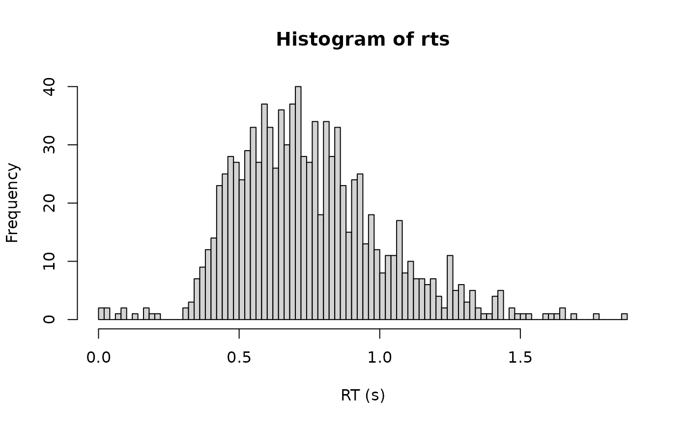

Density, random generation, and brms custom family for the shifted Gamma
distribution. A Gamma-distributed decision time is shifted by a non-decision
time ndt, and a fixed proportion poutlier of responses is generated by an
outlier process instead of by the decision process.
Functions:
rcogmod_gamma(): Simulates random draws.dcogmod_gamma(): Computes the density (likelihood).cogmod_gamma(): Creates abrms::custom_family().cogmod_gamma_stanvars(): Generates thestanvarsto pass tobrm().
Usage
rcogmod_gamma(n, mu = 3, sigma = 0.15, ndt = 0.2, poutlier = 0)
dcogmod_gamma(x, mu = 3, sigma = 0.15, ndt = 0.2, poutlier = 0, log = FALSE)
cogmod_gamma(
link_mu = "softplus",
link_sigma = "softplus",
link_ndt = "log",
link_poutlier = "logit",
predict_outliers = FALSE
)
cogmod_gamma_lpdf_expose()
cogmod_gamma_stanvars()
log_lik_cogmod_gamma(i, prep)
posterior_predict_cogmod_gamma(i, prep, predict_outliers = NULL, ...)
posterior_epred_cogmod_gamma(prep, predict_outliers = NULL)Arguments
- n
Number of observations. If
length(n) > 1, the length is taken to be the number required.- mu
Shape of the Gamma decision time. Must be positive.
- sigma
Scale of the Gamma decision time. Must be positive.
- ndt
Non-decision time (shift parameter), in seconds. Must be non-negative. Represents time for processes such as stimulus encoding and response execution. Range: [0, Inf).
- poutlier
Proportion of responses generated by the outlier process rather than by the decision process. Range:
[0, 1]. Atpoutlier = 0the distribution reduces to the plain shifted LogNormal.- x
Vector of quantiles (observed reaction times).
- log
Logical; if TRUE, probabilities p are given as log(p).
- link_mu, link_sigma, link_ndt, link_poutlier
Link functions for the parameters.
- predict_outliers
Logical; whether
posterior_predict()andposterior_epred()should include the outlier component.FALSE(the default) fixespoutlierto zero for prediction, so predictions describe the decision process alone; the likelihood is always the full mixture either way. Seewith_outliers().- i, prep
For brms' functions to run: index of the observation and a
brmspreparation object.- ...
Additional arguments.
Value
rcogmod_gamma() returns a numeric vector of n simulated
reaction times, in seconds. dcogmod_gamma() returns the density at each
element of x - the log density if log = TRUE - recycled to the length
of the longest argument. cogmod_gamma() returns a brms::custom_family
object, to put on a brms::bf() formula. cogmod_gamma_stanvars()
returns a brms::stanvars object holding the family's Stan functions
block, to pass to brms::brm(), and cogmod_gamma_lpdf_expose()
compiles that Stan code and returns it as an R function, for checking the
density outside of a model. The remaining functions are brms
post-processing methods, called by brms rather than directly:
log_lik_cogmod_gamma() returns a numeric vector holding one
log-likelihood value per posterior draw for observation i, and
posterior_predict_cogmod_gamma() a draws x 1 matrix of reaction times
simulated for observation i. posterior_epred_cogmod_gamma() returns a
draws x observations matrix of expected reaction times.
Details
mu is the shape and sigma the scale of the Gamma decision time,
so the mean decision time is mu * sigma and the median reaction time is
ndt plus the Gamma median.
The Gamma is not merely a convenient skewed shape: Tejo et al. (2019) derive
it as a first-passage time for an accumulator whose starting point varies
across trials, which places it beside cogmod_invgaussian() (diffusion from
a fixed start) and cogmod_bisa() (one-directional discrete cycles). The
drift rate is not identified from the fit though - it enters only the
back-calculation of the implied starting-point distribution - so mu and
sigma stay a shape and a scale here rather than becoming a drift and a
boundary.
ndt and poutlier mean exactly what they do in cogmod_lognormal(),
and with_outliers(), without_outliers(), p_outlier() and
cogmod_priors() all work here too. See ?rcogmod_lognormal for why ndt is
expressed directly in seconds rather than as a fraction of the fastest
observed response, what the half Student-t outlier component is for, and why
the outlier component's scale is a constant rather than a dpar, and why
reaction times have to be in seconds.
Note that the Gamma density is unbounded at ndt whenever the shape
mu < 1, which makes the likelihood unbounded as ndt approaches the
fastest response. The outlier component cannot repair that, since it adds
density rather than capping it. Less obviously, a shape anywhere below 2
leaves the derivative of the log-likelihood with respect to ndt unbounded
at every observation, which costs sampling time rather than correctness - see
the shape section of ?rcogmod_weibull, where the same three regimes are set
out and measured. cogmod_loggamma() nests this family at shape = sigma and
lets the data choose the shape instead of fixing it.
Do not fit this with init = 0, for two reasons at once: it puts ndt at
exp(0) = 1 second, above most sub-second responses, and the shape at
softplus(0) = 0.69, inside the unbounded region above. No single scalar
avoids both - ndt = exp(c) wants c near -1.6 while
shape = softplus(c) wants c above 1.9. Use cogmod_inits(), which sets
them separately:
brms::brm(f, data = df, prior = cogmod_priors(f, df),
stanvars = cogmod_stanvars(f), init = cogmod_inits(f, df))Measured on 1500 simulated trials with a true shape of 3, init = 0 left the
shape stuck at 0.69 and ndt at 0.999, with Rhat 2.3 and an effective
sample size of 3 after 306 seconds; an informative prior on the shape did
not rescue it, because a prior cannot move a chain whose gradient is zero.
The brms default init = "random" also works, at 14 seconds. See
cogmod_inits() for the full account.
References
Tejo, M., Araya, H., Niklitschek-Soto, S., & Marmolejo-Ramos, F. (2019). Theoretical models of reaction times arising from simple-choice tasks. Cognitive Neurodynamics, 13(4), 409-416. doi:10.1007/s11571-019-09532-1
Examples
rts <- rcogmod_gamma(1000, mu = 3, sigma = 0.15, ndt = 0.3, poutlier = 0.02)
hist(rts, breaks = 100, xlab = "RT (s)")

# Responses faster than ndt keep positive density
dcogmod_gamma(0.1, ndt = 0.3, poutlier = 0.02)
#> [1] 0.07041307
dcogmod_gamma(0.1, ndt = 0.3, poutlier = 0)
#> [1] 0